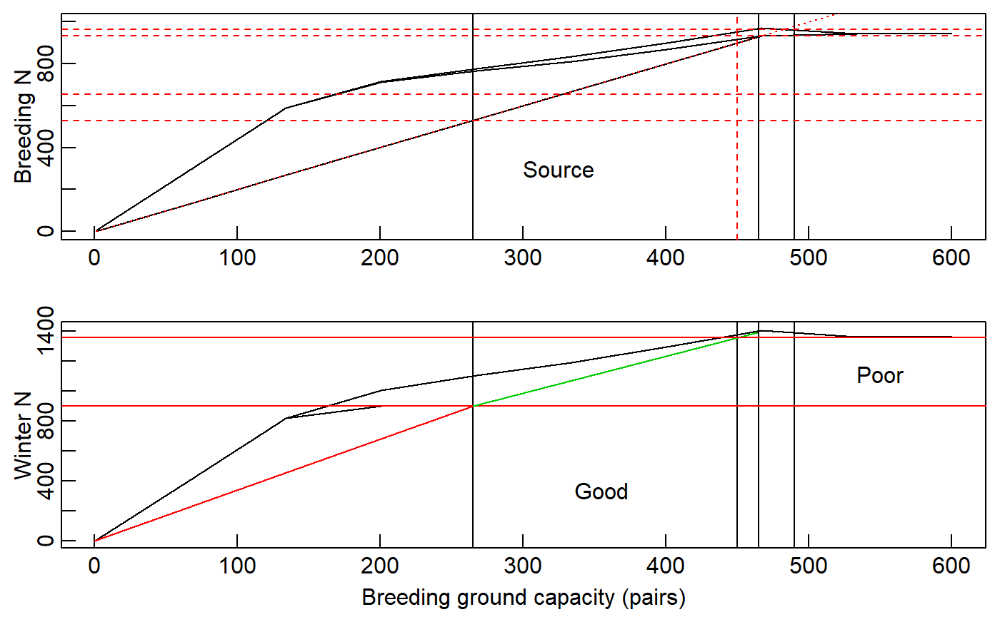

f-make_figure_28_4.RmdLoad the package
library(FACavian)plot_Fig28_4 plot_Fig28_4_IBM
Figure 28.4 can be generated by calling the param_ranges() function with the figure = … arguement set to 28.4.
F28.4 <- param_ranges(figure = 28.4)In this figure all parameters are held constant except K.bc (breeding ground sourrce habitat), which is varied from 1 to 600.
head(F28.4)
#> min max
#> gamma 5e+00 5e+00
#> co. 1e+00 1e+00
#> K.bc 1e+00 6e+02
#> K.bk 1e+04 1e+04
#> K.wg 9e+02 9e+02
#> S.w.mg 8e-01 8e-01A full sequence of values between these end onts is generated using param_seqs().
F28.4.seq <- param_seqs(F28.4)The list create by param_seqs() is turned into a “grid” by param_grid()
F28.4.grid <- param_grid(param.seqs = F28.4.seq)
#> The dimension of the fully expanded dataframe is:
#> 10 by 30We can then run the necessary models by passing the grid tothe “param.grid” arguement of runFAC_multi()
F28.4.FAC <- runFAC_multi(param.grid = F28.4.grid,
verbose = F)
#>
#> Model at equilibrium after 227 iterations
#>
#> Model at equilibrium after 236 iterations
#>
#> Model at equilibrium after 247 iterations
#>
#> Model at equilibrium after 118 iterations
#>
#> Model at equilibrium after 112 iterations
#>
#> Model at equilibrium after 115 iterations
#>
#> Model at equilibrium after 119 iterations
#>
#> Model at equilibrium after 173 iterations
#>
#> Model at equilibrium after 159 iterations
#>
#> Model at equilibrium after 159 iterationsThe plot plot_Fig28_4()
plot_Fig28_4(runFAC.multi = F28.4.FAC$multiFAC.out.df.RM)
To generate the parameter range by hand we need to specify the range in param_ranges().
F28.4.range <- param_ranges(K.bc. = c(0,600))
#> One of your carrying capacities is set to 0, which due to an unresolved bug can cause problems. This value has been set to 1. Sorry.The plot can then be created as above using param_seqs(), param_grid(), runFAC_multi() and plot_Figu28_4().